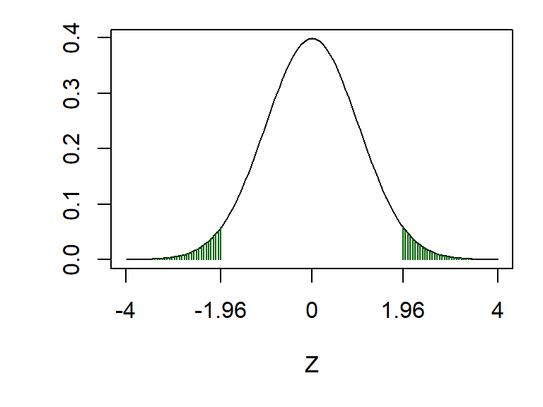

Chapter 9 Sample size and power for a Neyman-Pearson hypothesis test
How do we choose a sample size when designing a hypothesis testing experiment? Suppose we plan to use the Neyman-Pearson framework (so the conclusion will be that we either “reject” or “do not reject” the null hypothesis). Recall the two types of mistake we can make: a Type I error, of incorrectly rejecting \(H_0\) when \(H_0\) is true, and a Type II error: failing to reject \(H_0\) when \(H_0\) is false.
- We choose (in advance) the size/significance level of the test: this determines the Type I error rate.
- Our choice of sample size will influence the Type II error rate: the larger the sample size, the smaller the probability of a Type II error.
9.1 Gender bias example re-visited
Consider again the gender bias experiment from the previous chapter. Suppose we want to repeat it with new data, with 30 recruiters in each group, to see if we can confirm the original findings. With the same notation as before, we have
\[\begin{align} X&\sim Bin(n=30, \theta_X), \\ Y &\sim Bin(m=30, \theta_Y), \end{align}\]
and the hypotheses
\[\begin{align*} H_0&: \theta_X = \theta_Y,\\ H_A&: \theta_X \neq \theta_Y, \end{align*}\]
Suppose we are going to use a Neyman-Pearson test of size 0.05: we will either “reject” or “not reject” \(H_0\). Our test statistic is
\[ Z:= \frac{\frac{X}{n} - \frac{Y}{m}}{\sqrt{v}} \] and assuming \(H_0\) is true, we have \(Z~N(0,1)\), so the critical region will be \((-\infty, -1.96)\cup (1.96, \infty)\):

If \(H_0\) is true, then the probability that our test statistic \(Z\) will fall in the critical region is exactly 0.05. But what if \(H_0\) is false, and we actually want \(Z\) to fall in the critical region? What is the probability this would happen? If \(H_0\) is false, then the probability of (correctly) rejecting \(H_0\) will depend on
- the difference between \(\theta_X\) and \(\theta_Y\);
- the sample sizes \(n\) and \(m\).
We’ll investigate this with a simulation. Let’s suppose we have \(\theta_X=0.75\) and \(\theta_Y = 0.5\), and \(n=m=30\), so that, in this case, we would have
\[ X\sim Bin(30, 0.75), \quad Y\sim Bin(30, 0.5). \]
We first sample a random \(X\) and \(Y\)
## [1] 25 20So in this simulation our observed values of \(X\) and \(Y\) are 25 and 20. We now compute our observed test statistic:
pstar <- (x + y) / (30 + 30)
v <- pstar * (1 - pstar) * (1 / 30 + 1 / 30)
z <- (x/30 - y/30)/sqrt(v)
z## [1] 1.491Our observed test statistic would be 1.49, which is not in the critical region, so \(H_0\) would not be rejected in this case. Now let’s repeat this lots of times, and see how often \(H_0\) would be rejected
x <- rbinom(100000, size = 30, prob = 0.75)
y <- rbinom(100000, size = 30, prob = 0.5)
pstar <- (x + y) / (30 + 30)
v <- pstar * (1 - pstar) * (1 / 30 + 1 / 30)
z <- (x/30 - y/30)/sqrt(v)
sum(abs(z) > 1.96)## [1] 51585So, there’s about a 52% chance (51585/100000) we’d get data resulting in our test statistic falling in the critical region. We visualise this below.
Figure 9.1: The dashed line shows the assumed distribution of the test statistic \(Z\) under \(H_0\), and the critical region (shaded green). The histogram shows the real distribution of \(Z\), which we have obtained by simulation. About 52% of the mass of this distribution lies in the upper critical region (1.96 and above), so there’s about a 52% chance of the test statistic falling where we want it to, in this scenario where \(H_0\) really is false.
What happens if we increase the sample size, say to \(n=m=100\)?
x <- rbinom(100000, size = 100, prob = 0.75)
y <- rbinom(100000, size = 100, prob = 0.5)
pstar <- (x + y) / (100 + 100)
v <- pstar * (1 - pstar) * (1 / 100 + 1 / 100)
z <- (x/100 - y/100)/sqrt(v)## [1] 95989Now, there’s about a 96% chance (95989/100000) we’d get data resulting in our test statistic falling in the critical region. We visualise this below.
Figure 9.2: The dashed line shows the assumed distribution of the test statistic \(Z\) under \(H_0\), and the critical region (shaded green). The histogram shows the real distribution of \(Z\), which we have obtained by simulation. About 96% of the mass of this distribution lies in the upper critical region (1.96 and above), so there’s about a 96% chance of the test statistic falling where we want it to, in this scenario where \(H_0\) really is false.
9.2 The power of a hypothesis test
Definition 9.1 (Power) The power of a hypothesis test is defined to be the probability that we will reject \(H_0\) when \(H_0\) is false. This is the probability of avoiding a Type II error.
The definition above is a bit vague, in that the probability will depend on what the various population parameters are (the values of the binomial probabilities in our example); it will depend on how exactly \(H_0\) is false. To obtain a power, we will need to specify values for all the quantities that determine the distribution of the test statistic, including the sample size.
In the example above, we found the following.
For \(\theta_X=0.75\), \(\theta_Y = 0.5\), and \(n=m=30\), the power was estimated to be 0.52: there was a 52% chance of rejecting \(H_0\).
For \(\theta_X=0.75\), \(\theta_Y = 0.5\), and \(n=m=100\), the power was estimated to be 0.96: there was a 96% chance of rejecting \(H_0\).
We can see that increasing the sample size increases the power. The power will also increase as \(|\theta_X-\theta_Y |\) increases: as the difference between the two probability parameters increases, it becomes easier to detect that the two population proportions are different.
9.3 An analytical approach
As before, we can use an analytical approach rather than simulation. We just state the result here, and leave the derivation as an exercise in the tutorial questions. In the case of equal sample sizes per group (\(n=m\)), the power is given by \(\Phi(Z^*)\), where \(\Phi(.)\) is the cumulative distribution function of the standard normal distribution, and \[\begin{equation} Z^* = \sqrt{\frac{n(\theta_X - \theta_Y)^2}{\theta_X(1-\theta_X)+\theta_Y(1-\theta_Y)}} - Z_{\alpha/2} \tag{9.1} \end{equation}\] (where, for example, if \(\alpha=0.05\) then \(Z_{\alpha/2}=1.96\))
In our two examples, this gives a power of 0.97 for \(n=m=100\) and 0.54 for \(n=m=30\); this agrees well with the simulations.
Formulae such as (9.1) give us a means of choosing a sample size for an experiment. We decide what power we want (80% is a common choice), make an assumption about the population parameters (\(\theta_X\) and \(\theta_Y\)), and then work out what sample size is needed to achieve the desired power.
Example 9.1 (Sample size and power calculation for a hypothesis test.)
Consider again the electronic tagging example. Using the same notation suppose the true probabilities are \(\theta_X=0.3\) and \(\theta_Y=0.5\). The experiment is to be repeated, with a test of size 0.05.
- If the sample sizes were \(n=m=20\), what does the following R code suggest would be the power?
x <- rbinom(100000, size = 20, prob = 0.3)
y <- rbinom(100000, size = 20, prob = 0.5)
pstar <- (x + y) / (20 + 20)
v <- pstar * (1 - pstar) * (1 / 20 + 1 / 20)
z <- (x/20 - y/20)/sqrt(v)
sum(abs(z) > 1.96)## [1] 24806- Assuming an equal sample size in each group, what sample size would be needed to achieve 90% power? Use the following R output to help you.
## [1] 1.282Solution
- In the R code, 100,000 test statistics were simulated, with sample sizes of \(n=m=20\) and probability parameters \(\theta_X=0.3\) and \(\theta_Y=0.5\). We observe 24304 lying in the critical region, so the power of the test would be estimated as 24303/100000 \(\simeq 0.24\): only be a 24% chance of correctly rejecting \(H_0\).
- We require \(\Phi(Z*) = 0.9\), so we have \(Z^* = \Phi^{-1}(0.9)\). The R output gives us \(\Phi^{-1}(0.9)=1.282\) (to 3 d.p.). Now we invert equation (9.1), to get \[ n = (1.96+1.282)^2\times \frac{0.5^2 + 0.3 \times 0.7}{0.2^2} \simeq 121 \] so we would need about 121 people in each group.